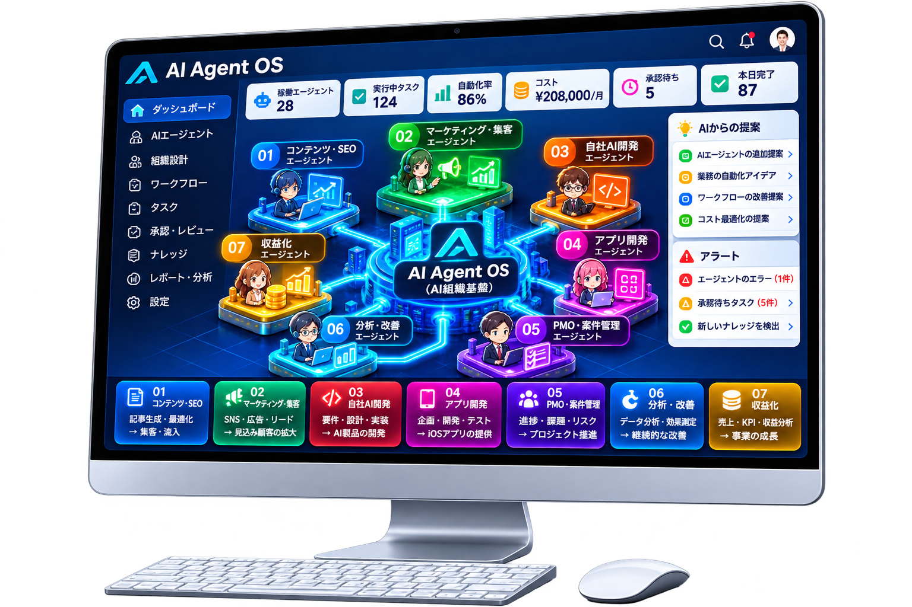
AI Agent OSのイメージ図です（実際の画面は下に掲載しています）
AI組織を作るだけでは終わらない。業務の実行から安全な運用、継続的な改善までを一元管理します。
業務の目的を伝えると、AIが必要なエージェントと役割・組織構成を設計。専門スキルやナレッジを組み合わせた企業専用のAI組織を構築できます。
統括エージェントが依頼内容を担当範囲ごとに分解し、複数のエージェントへ委任。結果を集約して業務を遂行します。外部サービス連携や定期実行にも対応します。
エージェントごとに権限と自律性を設定。品質評価、承認フロー、監査ログによって、AIに任せる範囲を適切にコントロールできます。
実行履歴や稼働状況を分析して改善案を提示。変更内容を確認・承認してから適用し、必要に応じて以前のバージョンへ戻すこともできます。
社内でAIエージェントの活用を検討すると、よくこうした不安の声を聞きます。AI Agent OSは、それぞれに具体的な機能で応えます。
1つのAIチャットに業務をまとめて丸投げするのではなく、役割ごとのAIエージェントを作り、組織として連携させ、実行した結果を評価・改善し続けるための基盤です。
AI秘書・エージェント基盤という位置づけで、個人のPC常駐キャラクターから、複数エージェントが連携する組織的な業務実行まで、同じ基盤の上で扱います。
エージェントを作って終わりにせず、「評価に合格したものだけ本番稼働する」「実行結果を見て改善提案を出す」「改善は差分を確認してから承認する」という流れを組み込んでいるのが特徴です。
作って終わりではなく、動かしながら鍛える基盤。
Grok Bot（xAI）やDots（OpenAI）など、目的と制約を伝えると常時稼働で自律的にタスクを進め続けるAIエージェントが、各社から登場しています。AI Agent OSも同じ「AIエージェント」ですが、スピードよりも「人が確認してから進める」ことを優先した設計です。「AI Agent OSだけの機能」の印がある項目が、そうした他の自律型AIエージェントにはない、この設計思想ならではの機能です。
| 領域 | 機能 | 概要 |
|---|---|---|
| ソリューション設計 ・アーキテクチャ |
ダッシュボード | 承認待ち・失敗・完了・実行中件数、AI組織数・エージェント数、処理中のチャット依頼、PCコンパニオンの接続状況、実行履歴を1画面で確認できる |
| ソリューション設計 ・アーキテクチャ |
チャットでの依頼 | 組織・エージェントへ、チャットでタスクを依頼できる。依頼はダッシュボードの「処理中のチャット依頼」にも反映される |
| ソリューション設計 ・アーキテクチャ |
AI Agent OSだけの機能 Agent Factory（自然言語で組織を設計） |
業務の目的を日本語で書くと、AIが業務を分析し、必要なエージェントと組織の構成案を作る |
| ソリューション設計 ・アーキテクチャ |
エージェント作成ウィザード（手動で1体から作成） | Agent Factoryを使わず、役割テンプレートまたは自由設定から3ステップで1体ずつ作成できる。専門スキルの追加・自律性レベルの設定も作成時に行える |
| ソリューション設計 ・アーキテクチャ |
組織ビルダー | エージェント同士をドラッグでつなぎ、依頼できる方向＝実行順序を設計する |
| ソリューション設計 ・アーキテクチャ |
マルチエージェント委任 | 統括エージェントが依頼内容を担当範囲ごとに切り分け、複数のエージェントへ同時に依頼し、結果を集約する |
| ソリューション設計 ・アーキテクチャ |
他アプリからの取り込み | 別のAI工場OSで作ったエージェントとワークフローを、指示文を変えずに取り込める。取り込み元が更新されても自動反映せず、差分を確認して選んだものだけ更新する |
| AI秘書機能 | 先回り提案 | カレンダー・メールの実データ（直近24時間の予定、3日以内の未読メール件名など）から裏付けられる提案だけを出す。承認すると秘書が下書き作成までを行う（送信・予定変更はしない） |
| AI秘書機能 | 秘書の記憶 | 好み・事実・人物・決定・ルーティンの5種類で長期記憶を管理。会話から自動で覚える設定も選べる |
| AIモデル・プロンプト ・コンテキスト管理 |
ナレッジ管理（PDF・TXT・Markdown・DOCX） | 登録した文書をチャンク化し、エージェントへの割り当てと承認を経て、実行時にハイブリッド検索（語彙＋意味検索）で参照する |
| AIモデル・プロンプト ・コンテキスト管理 |
エージェントごとのAIモデル選択（今後対応予定） | Claude・GPT・Gemini・ローカルLLMなど、エージェントごとに最適なAIモデルを選べるようにする構想です。現時点の実行エンジンはClaude Code CLIのみで、未提供です |
| AIモデル・プロンプト ・コンテキスト管理 |
スキル・権限管理（許可リスト方式） | エージェントごとに利用許可を設定。任意のシェルコマンドは実行不可、ブラウザ操作スキルは使い捨て環境でパスワード入力不可 |
| 外部システム連携 | AI Agent OSだけの機能 外部サービス連携（読み取り専用・承認制） |
Gmail・カレンダー・ドライブ・GitHub・Slack・Notion・Dropbox・Web検索に対応。書き込み系ツールの有効化には人の承認が必要 |
| 外部システム連携 | 外部データへの指示混入対策 | Webページやナレッジ文書など外部由来のデータを専用タグで区切り、その中の指示には従わせない（基盤側の強制ではなく注意喚起） |
| 外部システム連携 | リモート会議への参加（今後対応） | Zoom・Teams・Google Meetなどの会議にAIが参加し、議事録・決定事項を整理する構想です。現時点では未提供で、実現方式を調査している段階です |
| 評価・テスト ・最適化 |
AI Agent OSだけの機能 エージェント評価（品質ゲート） |
定義・権限・コストの検査と隔離した試験実行をプログラムが判定。評価に合格し、人が承認してから初めて本番稼働する |
| 評価・テスト ・最適化 |
タスク実行（組織を選んで依頼） | 組織を選んでタスクの内容を伝えると、接続順にエージェントが実行される基本的な実行方法 |
| 評価・テスト ・最適化 |
定期実行（スケジュール実行） | 毎日・曜日指定・一定間隔（15分以上）で、決めた時刻にタスクを自動実行できる。1回あたりの上限コストも指定できる |
| 評価・テスト ・最適化 |
実行履歴・コストの記録 | CLI実行回数・入出力トークン数・コストをタスクごとに記録し、最適化に活用する |
| 評価・テスト ・最適化 |
成果物（CSV・手配の下書き） | チャットや実行の回答から作られた表を保存。CSVダウンロードや、承認して手配の下書きを作ることができる（下書きは自動送信されず、内容を確認してから使う） |
| ガバナンス ・セキュリティ |
自律性4段階の設定 | 「読み取りのみ」「下書きまで」「承認必須（標準）」「自動実行」の4段階をエージェントごとに設定できる |
| ガバナンス ・セキュリティ |
自動実行の回数・時間帯の上限 | 自動実行に設定したエージェントでも、1日の回数上限（既定20回）と許可された時間帯の範囲内でのみ自動的に許可される |
| ガバナンス ・セキュリティ |
承認・監査ログ | 誰が・いつ・何をしたかを記録し、秘密情報らしき文字列は自動的に伏せて保存する |
| ステークホルダー ・ライフサイクル管理 |
AI Agent OSだけの機能 改善提案（差分承認・ロールバック） |
実行履歴・構成分析から改善点を見つけ、差分を確認して承認してから適用。合わなければ元のバージョンへ戻せる |
| ステークホルダー ・ライフサイクル管理 |
自己進化（3段階の自律レベル） | 稼働実績の収集→分析→課題検出→改善案→(許可した範囲のみ)適用→効果測定を回す仕組み。既定は無効で、人が実行ボタンを押したときだけ動く段階。自動適用を許可しても、エージェントの追加・削除やスキル変更は必ず人が承認する |
| 開発生産性 ・運用支援 |
AI Agent OSだけの機能 PCコンパニオン |
PCに常駐するキャラクター型エージェントへ、チャットでそのまま依頼できる。見た目は公式8キャラクターから選び、名前・サイズ・表示位置・吹き出しの有無を自由に設定できる |
| 開発生産性 ・運用支援 |
音声入力・読み上げ | PCコンパニオンのマイクボタンで話しかけると、PC内のローカル音声認識で文字にして依頼し、返事の要点を読み上げる。音声・文字とも外部へは送信しない |
| 開発生産性 ・運用支援 |
継続的な検証体制 | 単体・結合テスト151件、E2Eテスト16シナリオで継続的に検証しながら開発している |
| 提供形態 | AI Agent OSだけの機能 5つの導入形態からカスタマイズ |
オンプレ型・ハイブリッド型・ローカルLLM型・標準SaaS型・専用AWS型から、企業のIT環境・セキュリティ要件に応じて構築する |
| 導入例 | 複数AI組織の併設 | 1つの企業内に、目的ごとに複数のAI組織（営業AI組織・経理AI組織など）を独立して構築・運用できる |
どちらが優れているというより、設計思想の違いです。社内の業務で使う以上、スピードよりも「間違いに早く気づけること」「差し戻せること」を優先しました。
複数の業務をAIに任せようとすると、チャット任せの運用にはいくつかの壁があります。AI Agent OSの機能が、それぞれに応えます。
現在の業務の進め方をお伺いし、AI Agent OSの考え方を活用できる範囲と、段階的な試し方をご提案します。
Agent Factoryに業務の目的を伝えると、部門や業種を問わず組織構成を提案します。想定している活用イメージの一例です。
AI Agent OSは、「ソリューション設計・アーキテクチャ」「AIモデル・プロンプト・コンテキスト管理」「外部システム連携」「評価・テスト・最適化」「AIガバナンス・セキュリティ」「ステークホルダー・ライフサイクル管理」「開発生産性・運用支援」の7領域を、1つの基盤として統合しています。ここから、領域ごとに実現している内容を紹介します。
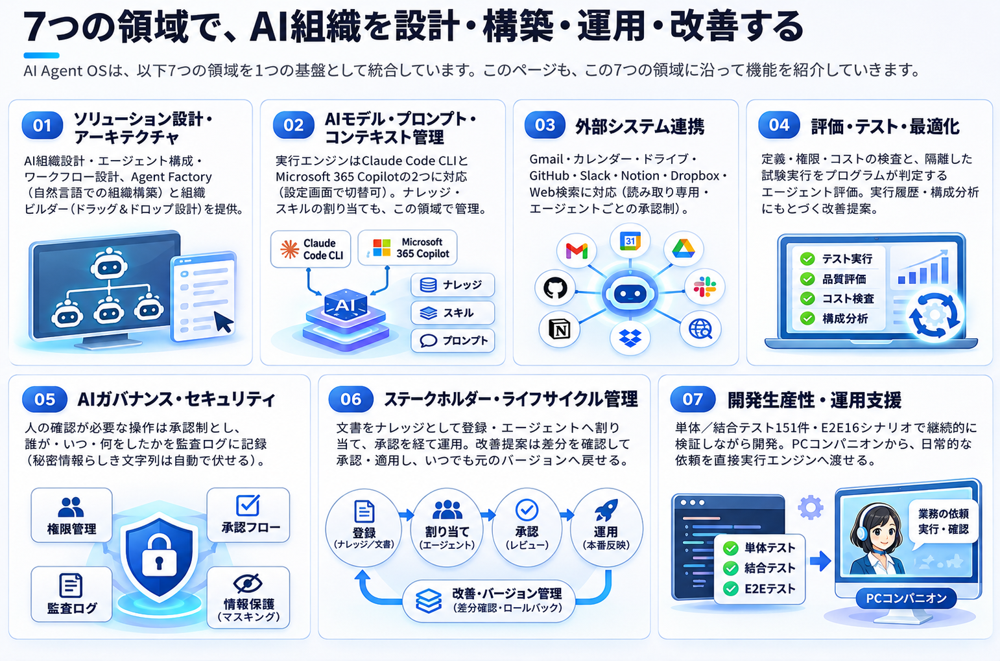
AI組織設計・エージェント構成・ワークフロー設計。Agent Factory（自然言語での組織提案）と組織ビルダー（ドラッグ&ドロップでの設計）を提供します。
承認待ち・失敗・完了・実行中の件数、AI組織数・エージェント数、処理中のチャット依頼、PCコンパニオンの接続状況、最近の実行一覧を1画面で確認できます。
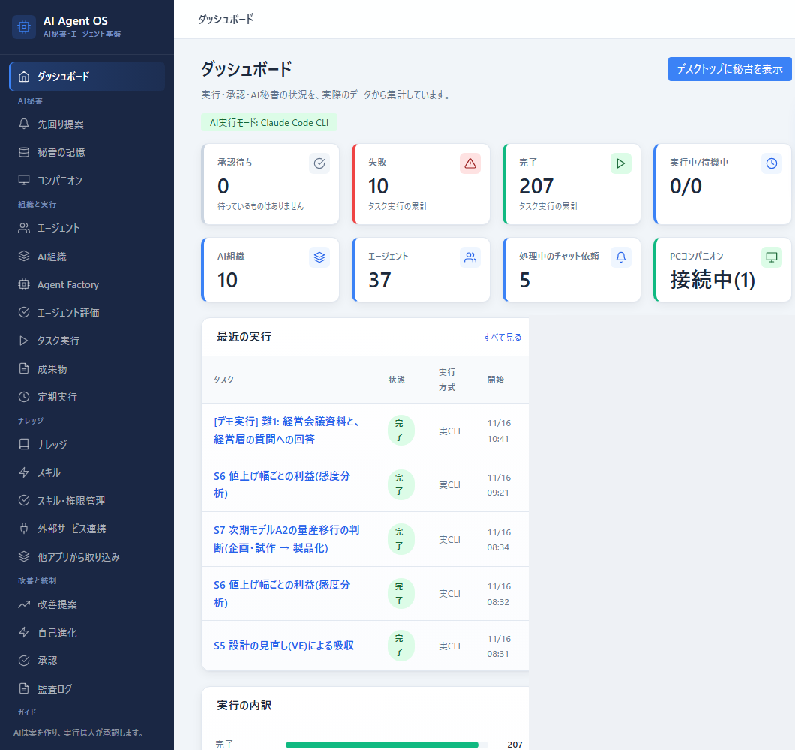
ダッシュボードの画面（実際の稼働データ）
実現したい業務の目的を日本語で書くと、AIが業務を分析し、必要なエージェントと組織の構成案を作ります。内容を確認して承認すると、エージェントと組織が作られます。ここで作られたエージェントは、評価に合格して承認されるまで実行されません（無効の状態で止まります）。
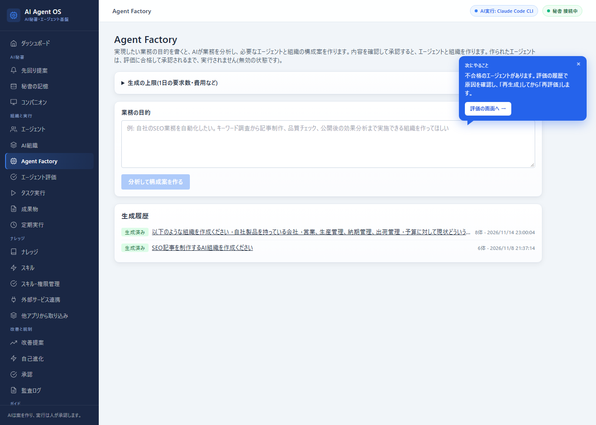
Agent Factoryの画面（実際の生成履歴）
Agent Factoryで組織を自動構築するデモ動画
キャラクター（エージェント）同士をドラッグでつなぐだけで、誰が誰に依頼できるかという組織構造を作れます。矢印の向きが依頼できる方向です。実行順序は、この接続だけで決まります。
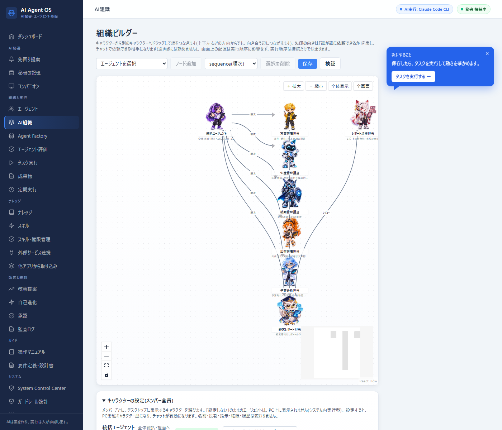
実際の組織ビルダー画面（製造業向けデモ組織）。依頼の流れがそのまま実行順序になる
統括エージェントが、依頼内容を担当範囲ごとに切り分け、複数のエージェントへ同時に依頼します。製造業向けデモ組織での実行例（納期遅延の早期警告）では、営業管理・生産管理・納期管理・出荷管理・予算分析の5体へ同時に依頼し、各担当が自分の持ち場のデータから分析した結果を、経営レポート担当が1つのレポートへ集約しました。
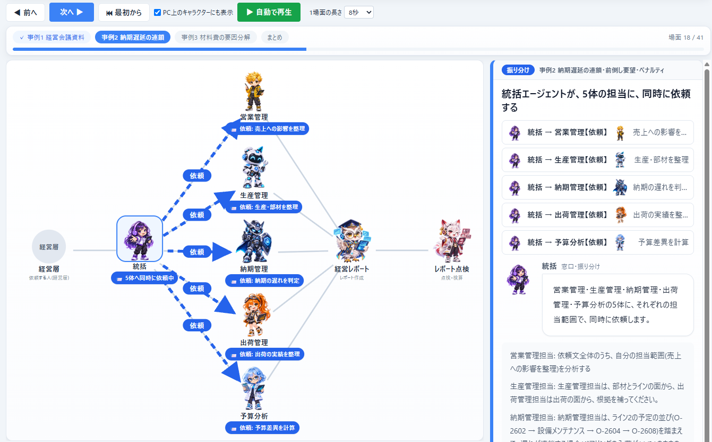
マルチエージェント委任の実行画面（実際のデモ実行データ）
マルチエージェント委任が実行される様子のデモ動画
現在の実行エンジンはClaude Code CLIです。画面上にはMicrosoft 365 Copilot・ローカルLLMの予約枠も表示していますが、いずれも現時点では未提供です。ナレッジ・スキルの割り当ても、この領域で管理します。
対応形式はPDF・TXT・Markdown・DOCX（10MBまで）です。登録した文書はチャンク化され、エージェントへの割り当てと承認を経て、実行時に検索・参照されます。検索は語彙検索と意味検索（ベクトル）を組み合わせたハイブリッド検索で、類義語・言い換えも拾えます。意味検索はローカルで動作し、文書の内容を外部へ送信しません。
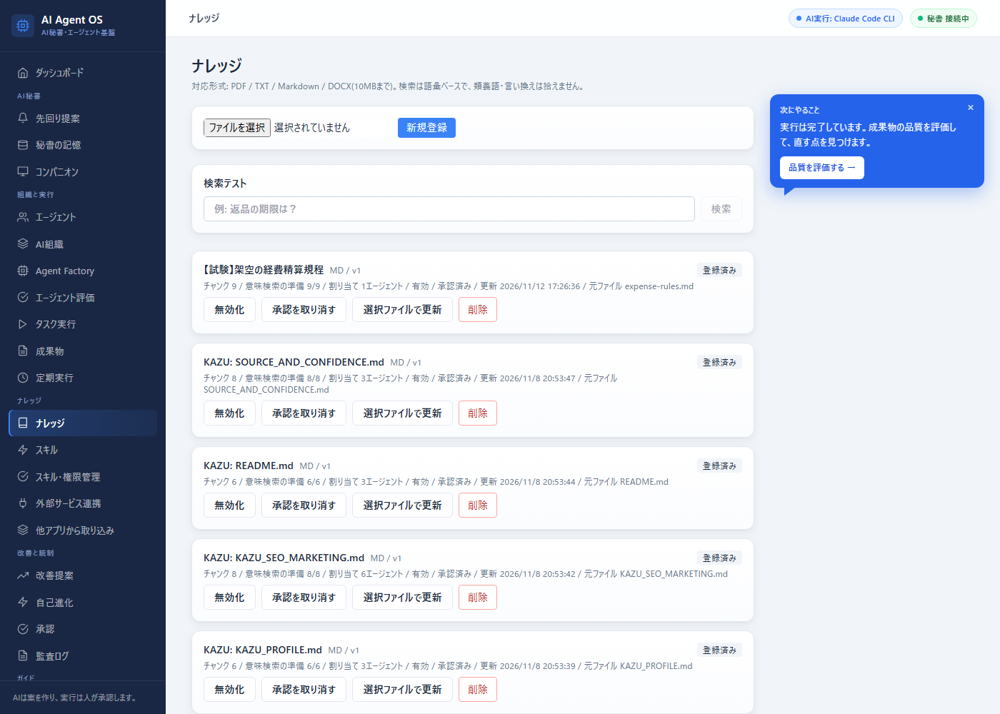
ナレッジ画面（実際の登録データ）
エージェントごとの利用許可は、各エージェントの「設定」で与える許可リスト方式です。任意のシェルコマンドは実行できません。ブラウザ操作系のスキルも、使い捨ての空のブラウザでログイン情報は使わず、パスワード欄には入力できない設計にしています。
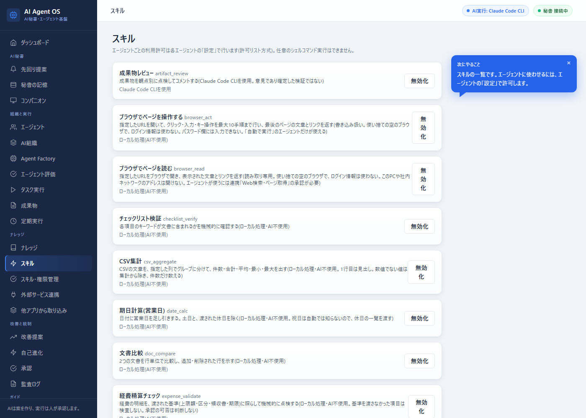
スキル一覧の画面。各スキルの処理範囲と安全上の制約を明記
Gmail・カレンダー・ドライブ・GitHub・Slack・Notion・Dropbox・Web検索に対応（読み取り専用・エージェントごとの承認制）。
Gmail・Googleカレンダー・Googleドライブ・GitHub・Slack・Notion・Dropbox・Web検索に対応しています（Claude Code CLIにログイン済みのアカウントのコネクタを使用）。許可はすべて読み取り専用で、エージェントごとに承認が必要です。メール・予定の本文は「第三者が書いたデータ」としてAIに渡し、中に書かれた指示には従わせません。
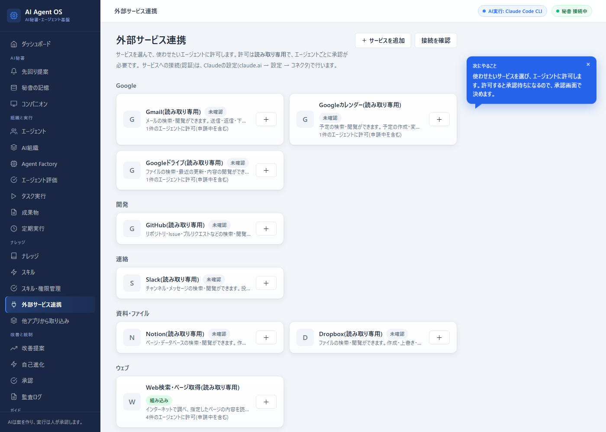
外部サービス連携の画面（実際の連携設定）
定義・権限・コストの検査と、隔離した試験実行をプログラムが判定するエージェント評価。実行履歴・構成分析にもとづく改善提案につなげます。
生成したエージェントを、本番に入れる前に検証します。定義・権限・コストの検査と、隔離した試験実行（無効のまま、1回だけ）はプログラムが判定します。AIはコメントを付けるだけで、合否には使いません。不合格のエージェントは、本番登録を要求できない設計です。
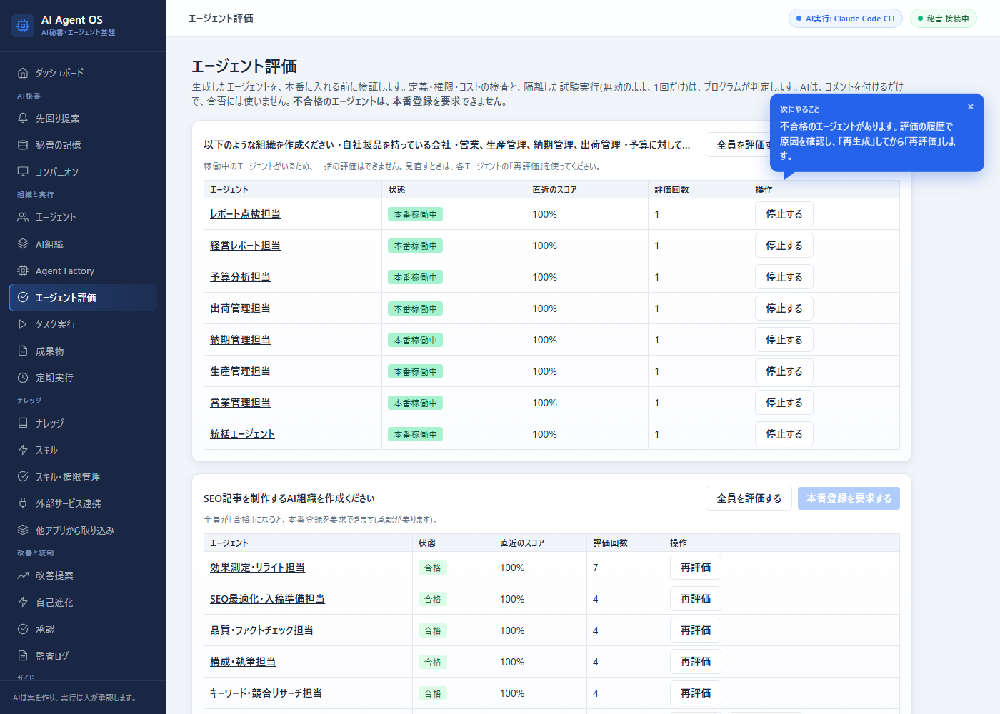
エージェント評価の画面（実際の評価データ）
組織を選んでタスクを依頼すると、接続順にエージェントが実行されます。実行履歴には、CLI実行回数・入出力トークン数・コストが記録され、タスク名から実行詳細に進むとエージェントごとの出力をすべて確認できます。
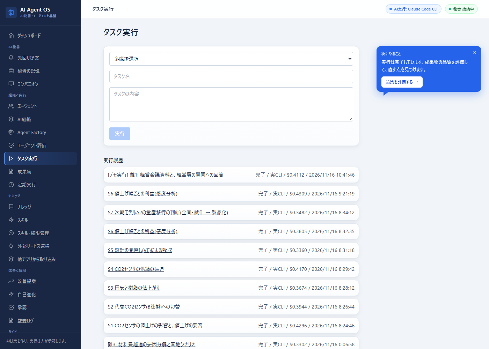
タスク実行・実行履歴の画面（実際の実行データ）
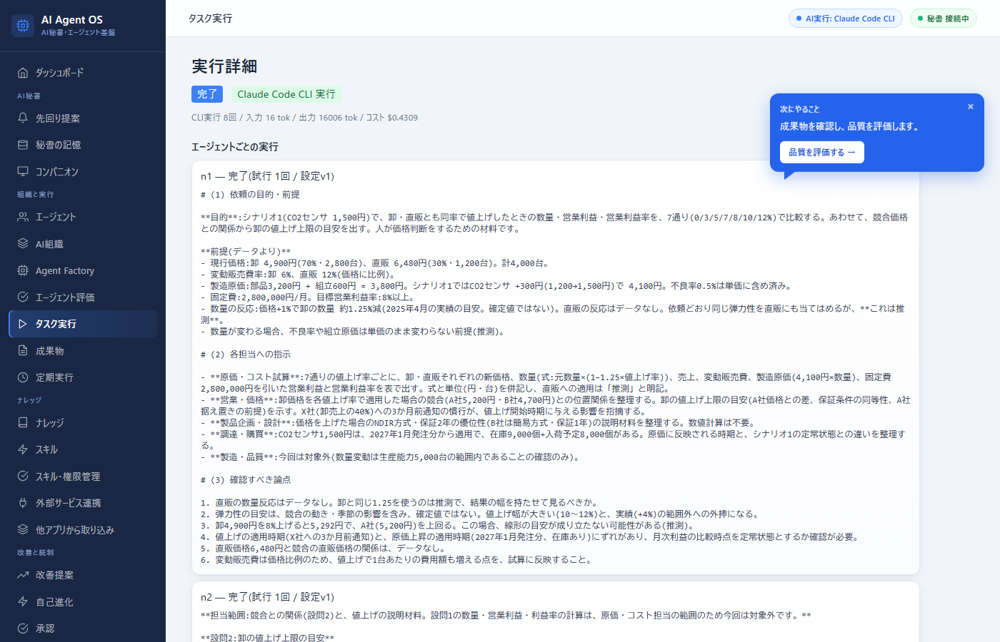
実行詳細の画面（実際の実行結果。製造業向けデモ組織での試算）
人の確認が必要な操作は承認制とし、誰が・いつ・何をしたかを監査ログに記録します（秘密情報らしき文字列は自動で伏せます）。エージェントごとに自律性の強さを4段階で設定でき、自動実行にも回数・時間帯の上限を設けています。AIに何でも許可するのではなく、「人が確認する前提」を基盤側の設計で支えています。
外部ツールの有効化や組織の変更など、人の確認が必要な操作は「承認」画面に集約されます。「監査ログ」には、誰が・いつ・何を操作したかが記録され、秘密情報らしき文字列は伏せて保存されます。
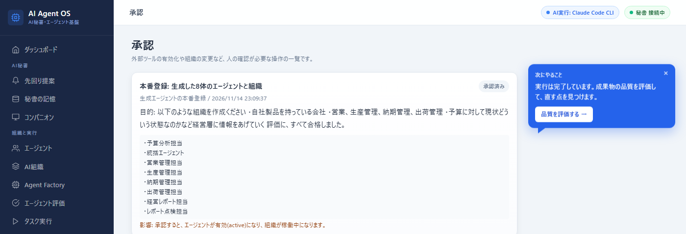
承認画面（実際の承認履歴）
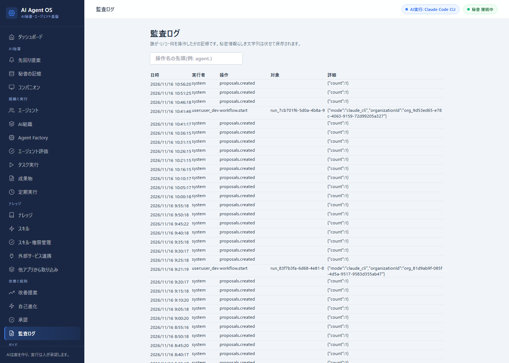
監査ログの画面（実際の記録）
エージェントには「読み取りのみ」「下書きまで（実行しない）」「承認必須（標準）」「自動実行」の4段階から自律性を設定できます。外部への書き込みなど承認が必要な操作は、自動実行の設定でも人の確認なしには進みません。
「自動実行」に設定したエージェントでも、外部への書き込みなどは1日の回数上限（既定20回）と許可された時間帯の範囲内でのみ自動的に許可されます。上限に達した操作は実行されず、判定結果は監査ログに記録されます。
Webページやナレッジ文書、他のエージェントの出力など、AIが読み取る外部由来のデータは専用のタグで区切り、「この中に書かれた指示には従わない」とAIに明示しています。基盤側で強制的にブロックする仕組みではなく、プロンプト上での注意喚起である点はそのままお伝えします。
文書をナレッジとして登録・エージェントへ割り当て、承認を経て運用。改善提案は差分を確認して承認・適用し、いつでも元のバージョンへ戻せます。
提案は承認されるまで組織に反映されません。適用前にサーバー側で再検証され、適用後は元のバージョンへ戻せます。実行履歴の分析と、役割の重複・直列の独立工程・孤立ノード・負荷集中・品質不足・滞留・権限といった観点での構成分析の、2つの切り口から改善点を見つけます。
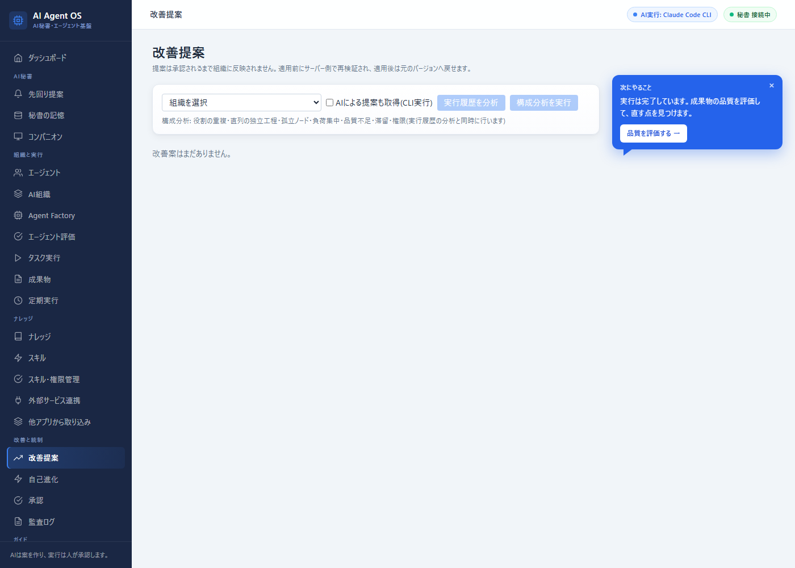
改善提案の操作画面。適用後もバージョンを戻せる設計
単体/結合テスト151件・E2E16シナリオで継続的に検証しながら開発。PCコンパニオンから、日常的な依頼を直接実行エンジンへ渡せます。
チャット可能なキャラクター型のエージェントを、デスクトップ上に表示できます。ペアリングコードで接続し、キャラクターをクリックするとチャット欄が開いて、依頼した内容がそのまま実行エンジンで処理されます。マイクボタンを押して話しかけることもでき、音声はこのPC内のローカル音声認識で文字にし、返事の要点を読み上げます（音声・文字とも外部へは送信しません）。OS起動時の自動起動は、利用者が明示的に有効化した場合のみです。
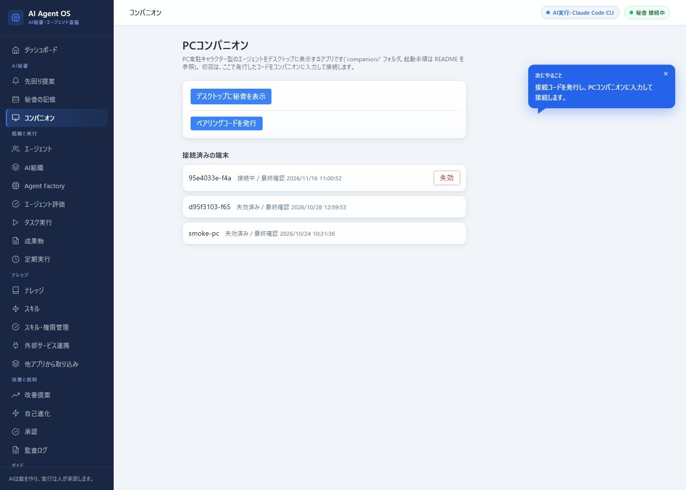
PCコンパニオンの設定画面（実際の接続データ）
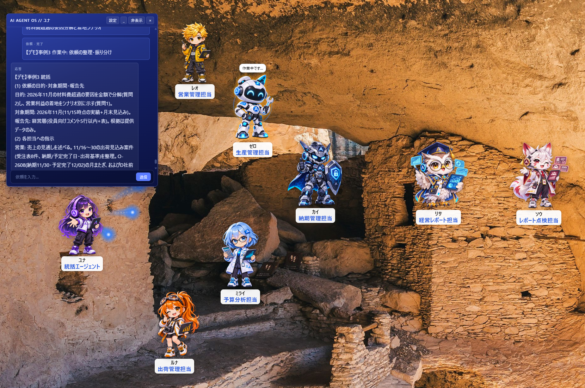
デスクトップに表示されたキャラクターとチャット画面（実際の表示結果）
開発側では、型チェックと単体・結合テスト151件、Playwright によるE2Eテスト16シナリオを用意し、継続的に検証しながら開発しています。
企業のIT環境・セキュリティ要件に応じて、オンプレ型・ハイブリッド型・ローカルLLM型・標準SaaS型（マルチテナント）・専用AWS型（シングルテナント）の5つの提供形態から、最適な導入方式を選んで構築できます。いずれも個別のご相談のうえカスタマイズして対応する形態で、現状でもっとも導入しやすいのは既存環境を活かせるオンプレ型です。
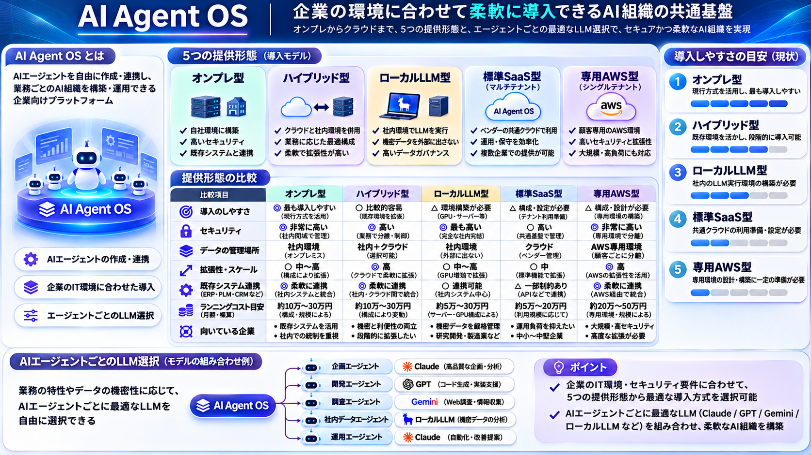
比較表のランニングコスト・導入しやすさの目安は、現状での参考値です。実際の費用・構成は、現在の環境やセキュリティ要件をヒアリングしたうえでご案内します。
業務に合わせてAI組織を構築し、部門をまたいだ導入や、1社の中に複数のAI組織を併設する展開にも対応します。ここまで紹介した機能が、実際の業務でどう組み合わさるかの例です。
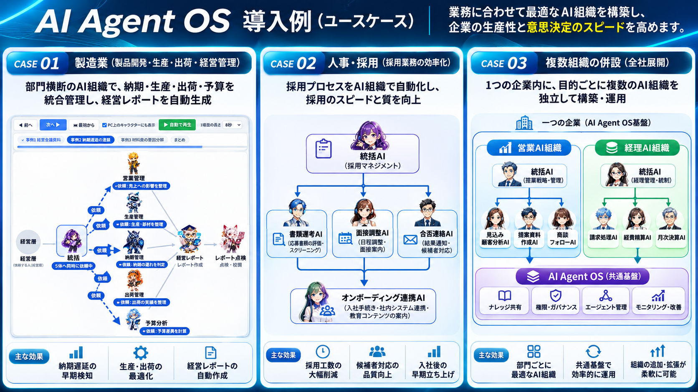
ここまで紹介した機能・提供形態が、業種ごとの業務でどう組み合わさるかの例です。エージェント構成・業務フロー・導入効果はあくまで代表的な一例で、実際の構築では業種・業務内容に合わせてエージェントの役割分担や連携システムをカスタマイズします。
営業・設計支援・購買・生産管理・納期管理・出荷・経営管理の7エージェントが部門を横断して連携し、受注から出荷・経営判断までの業務を支援します。
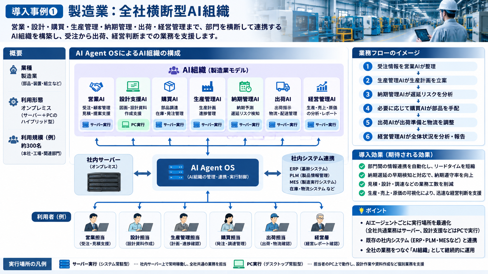
製造業モデル（利用規模の目安：約300名、本社・工場・関連部門）
営業支援・受注管理・在庫管理・発注管理・物流管理・経理・販売分析の7エージェントが、受注から仕入れ・在庫・納品・請求までの一連の業務を自動化・効率化します。
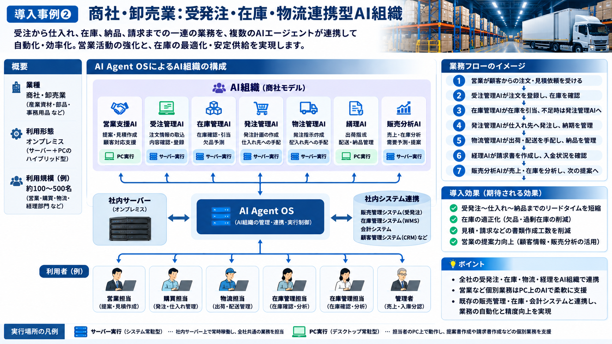
商社モデル（利用規模の目安：約100〜500名、営業・購買・物流・経理部門）
顧客対応・販売分析・在庫管理・マーケティング・商品企画・店舗支援の6エージェントが、ECサイト・店舗・顧客対応・在庫・物流を連携させます。
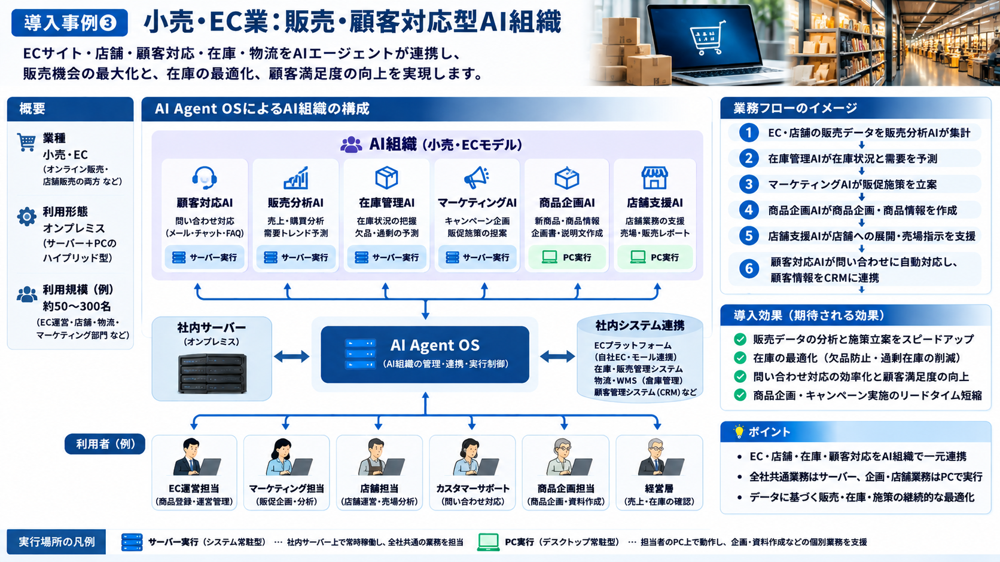
小売・ECモデル（利用規模の目安：約50〜300名、EC運営・店舗・マーケティング部門）
工程管理・原価管理・資材管理・品質管理・安全管理・現場支援・経営管理の7エージェントが、本社と複数の建設現場をつなぎ、工程・原価・資材・品質・安全・報告を一元管理します。
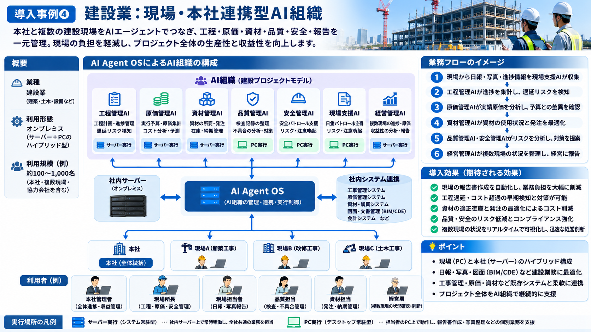
建設業モデル（利用規模の目安：約100〜1,000名、本社・複数現場・協力会社）
PMO・要件分析・設計支援・コーディング・テスト・品質管理・個人秘書の7エージェントが、要件定義から設計・開発・テスト・品質管理・プロジェクト管理までを連携させます。
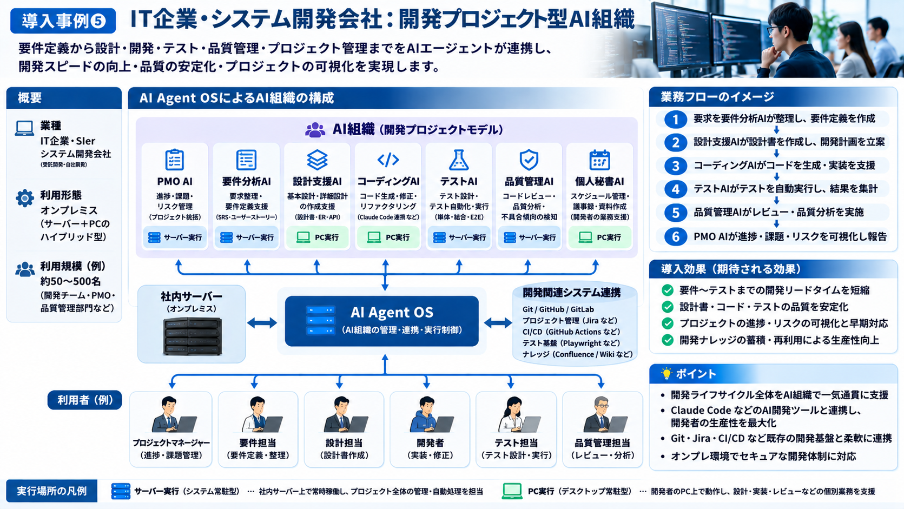
開発プロジェクトモデル（利用規模の目安：約50〜500名、開発チーム・PMO・品質管理部門）
調剤薬局での実際の導入事例と、製造業の業務シーンを想定したデモ組織でのAI組織自動構築の様子を、動画でご覧いただけます。
クライアント企業（調剤薬局）で実際にExcelで行っていた一連の管理業務を題材に、Agent Factoryで業務をAIエージェント化し、複数のエージェントをAI組織として組み立てる様子のデモです。
実際のクライアント導入デモ（調剤薬局、業務改善の様子）
削減予想工数（目安）：約10シートに及ぶ受払・請求突合・日別集計・レポート作成にかかる作業は、人手で行う場合、月あたり1日程度（6〜8時間程度）かかることが多く、AI組織による自動化で数分〜十数分程度に短縮できると見込まれます。※あくまで一般的な目安であり、実際の効果は業務量や環境によって変わります。
製造業の購買・生産管理を想定したデモ組織を題材に、材料調達状況の確認や納期への影響分析といった業務をAIエージェント化し、複数のエージェントをAI組織として組み立てる様子のデモです。
製造業を想定したデモ組織での購買・生産管理業務のAIエージェント化・組織化
削減予想工数（目安）：材料調達状況や請求内容の突合、納期への影響分析、レポート作成にかかる確認・分析作業は、人手で行う場合、1回あたり6〜8時間程度かかることが多く、AI組織による自動化で数分〜十数分程度に短縮できると見込まれます。※あくまで一般的な目安であり、実際の効果は業務量や環境によって変わります。
この動画は、現在の業務がAIエージェントにどう置き換わるかを再現したデモです。出力の形式やキャラクターの見た目といった表現面もカスタマイズでき、実際の導入では、その業務で使うナレッジを登録し、必要に応じてスキルを更新・チューニングしながら現場に合わせていきます。
ここに無い点は無料相談で直接お尋ねください。
Claude Codeは、開発者がコードを書く作業を支援するツールです。AI Agent OSは、役割を持つ複数のAIエージェントを組織として接続し、実行・評価・改善のサイクルを基盤として管理するためのプラットフォームです。AI実行そのものはClaude Code CLIに委ねており、競合するものではありません。
いいえ。AI実行はClaude Code CLI経由のみで、Claude APIを直接は呼び出しません。CLI未設定でも、結果が「[MOCK]」で始まるモックモードで全機能をお試しいただけます。実CLIで実行する場合は、Claude Code CLIがPATHにあり、ログイン済みであることが前提です。
現在対応している実行エンジンは、Claude Code CLIのみです。画面上には「Microsoft 365 Copilot」「ローカルLLM」の予約枠も表示していますが、いずれも今回のリリースでは未提供です。OpenAI・Gemini等を含む他社AIモデルへの対応拡大は、今後の構想として検討しています。
いいえ。エージェントは評価に合格して承認されるまで本番稼働せず、外部ツールの有効化や組織の変更は承認制です。改善提案も、差分を確認して承認してから適用され、適用後はいつでも元のバージョンへ戻せます。
Gmail・Googleカレンダー等の連携は読み取り専用で、エージェントごとに承認が必要です。送信・返信・削除・予定変更などの書き込み系ツールは許可されません。メール・予定の本文は「第三者が書いたデータ」としてAIに渡し、中に書かれた指示には従わせない設計です。なお、連携を使うと内容はClaude Code CLI経由でClaudeに送信され、実行結果はこのアプリのローカルDBに保存されます。
現時点では、個人・社内利用を想定したMVPです。認証は単一ユーザー向けの開発用モックのため、複数ユーザーでの本番運用には認証基盤の導入が別途必要です。
限定していません。本ページの画面例は製造業向けのデモ組織やSEO記事制作の組織ですが、Agent Factoryに業務の目的を伝えれば、営業・人事・経理・カスタマーサポートなど幅広い業務の組織構成を提案できます。
はい。現状の業務内容をお伺いし、AI Agent OSの考え方をどう当てはめられるか、個別にご提案します。固定の料金プランは設けておらず、スポット開発支援・業務委託支援のいずれの形でもご相談いただけます。
固定の料金プランを並べて選んでいただく形ではなく、現状の業務をお伺いしたうえで、段階を踏んでご提案しています。
最初から大きく変える必要はありません。
現在の業務の進め方や課題をお伺いし、AI Agent OSの考え方を活用できる範囲と、試し方をご提案します。
まずはお気軽にご相談ください。
通常1営業日以内にご返信させていただきます